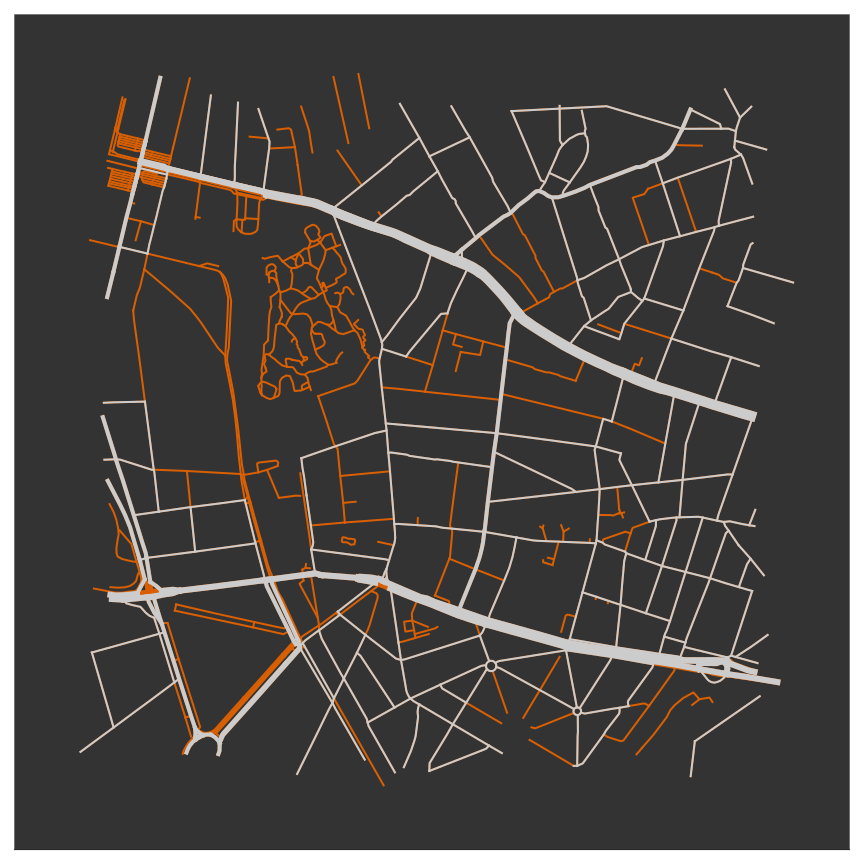

Client-side route planning: preprocessing the OpenStreetMap road network for Routable Tiles
Harm Delva1, Julián Andrés Rojas Meléndez1, Ben Abelshausen2, Pieter Colpaert1 and Ruben Verborgh1
1 IDLab, Ghent University – imec
2 Open Knowledge Belgium
Linked Geospatial Data
We think that the concept of Linked Data is fundamental to the publishing of spatial data on the Web: it is the links that connect data together that are the foundational to the Web of data.
W3C and OGC, Spatial Data on the Web Best Practices
Linked Data Fragments
Share the load
OpenStreetMap as Linked Data Fragments
Advantages of routable tiles
- Potential live updates
- Easy data reuse
- Split up data management from route planning
Can we do serverless route planning?
Slow but sure
We need to reduce the data requirements
See also:
The ethics of performance
Moving the load

Pedestrian Areas
We are not the first
Source: Configuring OpenTripPlanner
Transit Tiles
Higher zoom levels contain less data
576 km²
Zoom level 11 $\rightarrow$ Zoom level 10
6.1 MB uncompressed $\rightarrow$ 3.7 MB uncompressed
Contracting unimportant nodes
576 km²
Zoom level 10
3.7 MB uncompressed $\rightarrow$ 2.0 MB uncompressed
Which regions are being reduced

Significant Impact on Query Times
Brussels Airport - Bruges
100 km through relatively dense urban areas
| Time Needed | Downloaded Data | |
|---|---|---|
| Raw Data | 3,393 s | 214,672 kB |
| Preprocessed Data | 20 s | 9,116 kB |
Processing pipeline
Routing data Ecosystem
What's stopping us?
Cost?
Trust?
Conclusion
Serverless route planning seems feasible
We should share more data
hdelva.be/slides/sotm2019/
github.com/hdelva/preprocess_routable_tiles